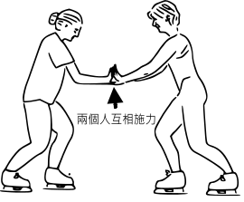

牛頓第三定律
-牛頓第三定律表明，當兩個物體互相施加力在對方身上的時侯，它們分別施加在對方身上的力是大小相等、方向相反的。即是說可以用以下的數學方程式表達：
數學方程式
意思
是物體 B 施加在物體 A 上面的力。
是物體 A 施加在物體 B 上面的力表示質點2受到的質點1的作用力。
表示質點2受到的質點1的作用力。
表示質點1受到的質點2的反作用力。

兩個人互相推對方會有反作用力。
-艾薩克·牛頓在《自然哲學的數學原理》中，對該定律的原始表述與上述表述幾乎完全一致。
-書中還給出了基於以上定律的六條推論。
-牛頓運動定律的分量形式及在如自然座標系等其它座標系下的形式詳見各子詞條。
-該定律在各版本教材中被引用時，其形式亦可能被改變。
返回介紹頁面
考考你!


 是物體 B 施加在物體 A 上面的力。
是物體 B 施加在物體 A 上面的力。 是物體 A 施加在物體 B 上面的力表示質點2受到的質點1的作用力。
是物體 A 施加在物體 B 上面的力表示質點2受到的質點1的作用力。 表示質點2受到的質點1的作用力。
表示質點2受到的質點1的作用力。 表示質點1受到的質點2的反作用力。
表示質點1受到的質點2的反作用力。